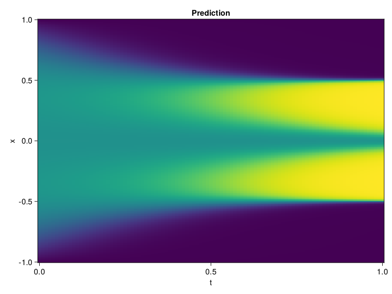

Allen-Cahn Equation with Sequential Training
In this tutorial we are going to solve the Allen-Cahn equation with periodic boundary condition from $t=0$ to $t=1$. The traning process is split into four stages, namely $t\in [0,0.25]$, $t\in [0.0,0.5]$, $t\in [0.0,0.75]$ and $t\in [0.0, 1.0]$.
using ModelingToolkit, IntervalSets
using Sophon
using Optimization, OptimizationOptimJL
@parameters t, x
@variables u(..)
Dₓ = Differential(x)
Dₓ² = Differential(x)^2
Dₜ = Differential(t)
eq = Dₜ(u(x, t)) - 0.0001 * Dₓ²(u(x, t)) + 5 * u(x,t) * (abs2(u(x,t)) - 1.0) ~ 0.0
domain = [x ∈ -1.0..1.0, t ∈ 0.0..0.25]
bcs = [u(x,0) ~ x^2 * cospi(x),
u(-1,t) ~ u(1,t)]
@named allen = PDESystem(eq, bcs, domain, [x, t], [u(x, t)])\[ \begin{align} - 0.0001 \frac{\mathrm{d}^{2}}{\mathrm{d}x^{2}} u\left( x, t \right) + 5 \left( -1.0 + \left|u\left( x, t \right)\right|^{2} \right) u\left( x, t \right) + \frac{\mathrm{d}}{\mathrm{d}t} u\left( x, t \right) =& 0.0 \end{align} \]
Then we define the neural net, the sampler, and the training strategy.
chain = FullyConnected(2, 1, tanh; hidden_dims=16, num_layers=4)
pinn = PINN(chain)
sampler = QuasiRandomSampler(500, (300, 100))
strategy = NonAdaptiveTraining(1, (50, 1))
prob = Sophon.discretize(allen, pinn, sampler, strategy)OptimizationProblem. In-place: true
u0: ComponentVector{Float64}(layer_1 = (weight = [1.9300243854522705 -1.0307505130767822; -0.5309758186340332 1.2738394737243652; … ; -0.7837159037590027 0.7658641338348389; 0.08569842576980591 1.1491103172302246], bias = [0.0; 0.0; … ; 0.0; 0.0;;]), layer_2 = (weight = [0.3951903283596039 -0.08762218803167343 … 0.040134306997060776 0.48943525552749634; 0.10341334342956543 0.36789119243621826 … -0.06026095151901245 0.13831527531147003; … ; -0.14785216748714447 0.0147687504068017 … 0.0259109977632761 -0.08507056534290314; 0.24734409153461456 -0.6066094636917114 … -0.3434945344924927 -0.1887083649635315], bias = [0.0; 0.0; … ; 0.0; 0.0;;]), layer_3 = (weight = [-0.04051560163497925 -0.1218433529138565 … 0.4543832838535309 0.5016506314277649; 0.27956491708755493 0.38366618752479553 … 0.27497994899749756 -0.41448426246643066; … ; -0.04702434316277504 -0.5246761441230774 … -0.6811383962631226 -0.16008047759532928; 0.6720083355903625 -0.4914852976799011 … 0.19119907915592194 -0.590654194355011], bias = [0.0; 0.0; … ; 0.0; 0.0;;]), layer_4 = (weight = [-0.21779264509677887 -0.39475035667419434 … 0.2541404366493225 0.7139878273010254; -0.016059143468737602 0.5101325511932373 … 0.37290969491004944 -0.34688523411750793; … ; 0.3088608384132385 0.28995180130004883 … 0.5691798329353333 0.5272286534309387; 0.6877688765525818 -0.4686855673789978 … -0.2542799711227417 -0.3260568082332611], bias = [0.0; 0.0; … ; 0.0; 0.0;;]), layer_5 = (weight = [-0.7214838266372681 -0.06417161971330643 … 0.47841042280197144 -0.0790829211473465], bias = [0.0;;]))We solve the equation sequentially in time.
function train(allen, prob, sampler, strategy)
bfgs = BFGS()
res = Optimization.solve(prob, bfgs; maxiters=2000)
for tmax in [0.5, 0.75, 1.0]
allen.domain[2] = t ∈ 0.0..tmax
data = Sophon.sample(allen, sampler, strategy)
prob = remake(prob; u0=res.u, p=data)
res = Optimization.solve(prob, bfgs; maxiters=2000)
end
return res
end
res = train(allen, prob, sampler, strategy)u: ComponentVector{Float64}(layer_1 = (weight = [2.0061657062678555 -0.7831900202190061; -0.25217583977884334 1.1160955802164458; … ; -1.9010164236139373 0.637370016391287; -0.2043946409824466 0.8545622356827387], bias = [0.3778271858689308; 1.1834776387304293; … ; -0.8796815205977556; 0.55789587535682;;]), layer_2 = (weight = [0.8593254573211809 0.45802170720966967 … 0.4910089526523931 1.0618180244406672; -0.09640686965065161 0.00301512354982961 … -0.12397130820355229 -0.12231352077665104; … ; 0.4099279358963982 -0.061875957640503354 … -0.16716710515800517 -0.1435075881919575; -0.0031799179045270787 -0.6734385507159775 … -0.6079607980265606 -0.25609123588385124], bias = [1.3901810498563325; -0.5227730806958528; … ; 0.04279502302859435; -0.1385459306094973;;]), layer_3 = (weight = [-0.8519289206400288 -0.28168058624204745 … 0.47711922896334197 0.34497777306070354; 0.6029643936454991 0.823578793272989 … -0.5568431084354192 -1.0430918841366787; … ; 0.2661303589031147 -0.3501489586874228 … -0.16080075135427846 -0.02952802198574031; 1.0897258199928406 -1.3138300424385807 … 0.9429554901372859 -1.3684544100936207], bias = [-0.14277891355792688; 0.11495334157102734; … ; -0.21394504496393701; 0.6249515746951004;;]), layer_4 = (weight = [-0.589478605648399 -1.0593536717501932 … 0.23938252835723087 1.2745397209710414; 0.038075582463394375 0.20343129716896735 … 0.38641458874706003 -0.14517629692396272; … ; 0.5435134175118067 0.04799248828252624 … 0.40539180827336224 1.0851981262496742; 0.7374636061324688 -0.5736337869249772 … -0.35585481726932433 -0.3577948065035025], bias = [0.3844566988537586; -0.028355669867288037; … ; -0.022728296976159617; 0.11897742135630919;;]), layer_5 = (weight = [-0.8881144714130284 -0.13090968854719298 … 0.5217242628137757 0.06230269044765601], bias = [-0.41862700162178934;;]))Let's plot the result.
using CairoMakie
phi = pinn.phi
xs, ts = [infimum(d.domain):0.01:supremum(d.domain) for d in allen.domain]
axis = (xlabel="t", ylabel="x", title="Prediction")
u_pred = [sum(pinn.phi([x, t], res.u)) for x in xs, t in ts]
fig, ax, hm = heatmap(ts, xs, u_pred', axis=axis)